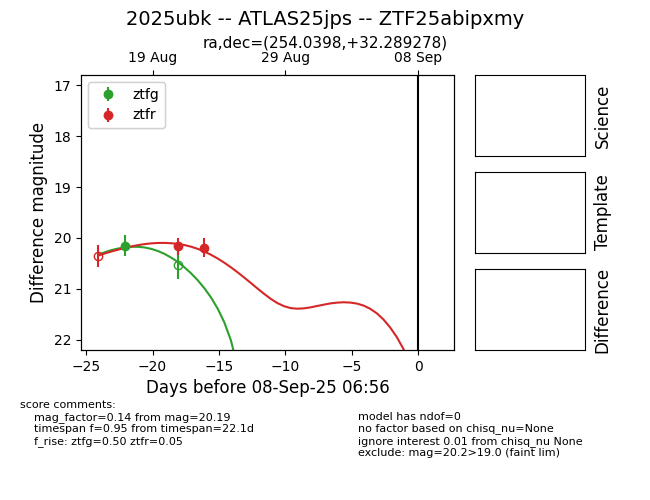

Target 2025ubk at 2025-08-26 10:53, see:
FINK: fink-portal.org/ZTF25abipxmy
Lasair: lasair-ztf.lsst.ac.uk/objects/ZTF25abipxmy
ALeRCE: alerce.online/object/ZTF25abipxmy
TNS: wis-tns.org/object/2025ubk
YSE: ziggy.ucolick.org/yse/transient_detail/2025ubk
alt names
ZTF25abipxmy (ztf,fink)
2025ubk (tns,yse)
ATLAS25jps (atlas)
coordinates:
equatorial (ra, dec) = (254.0398,+32.28928)
galactic (l, b) = (54.2882,+37.31982)
photometry
last ztfg=20.15, ztfr=20.19
1 ztfg, 2 ztfr detections
